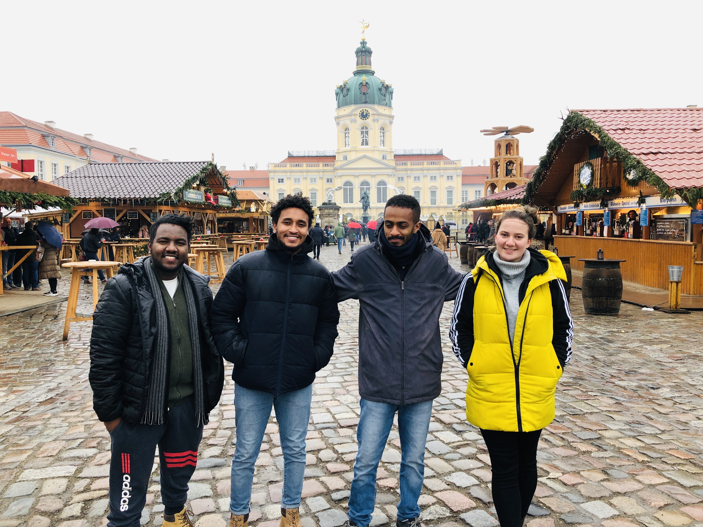

International program · Team leadership
Community Health Outreach
Led eight people from six countries through community health outreach work without a shared native language.

01 · Challenge
A multicultural team needed to plan and deliver community health education while working across language barriers and an unfamiliar local environment.
The work demanded clarity, empathy, practical logistics, and a willingness to adapt plans in real time.
02 · My role
I led an eight-person team representing six countries, planned workshops, coordinated with clinics, and helped deliver accessible public health material with no shared native language.
- Team leadership
- Workshop planning
- Clinic coordination
- Cross-cultural communication
- Field logistics
03 · Process
Make the work visible.
Align
Created shared expectations for a team with different languages and working styles.
Simplify
Translated complex public health information into material people could use.
Deliver
Coordinated workshops, clinics, people, and field logistics in an unfamiliar environment.
04 · Execution
A practical outreach program delivered through clear roles, over-communication, backward planning, and simple public-facing education.
05 · Results
The outcome.


Tools & methods
- Workshop planning
- Cross-cultural leadership
- Scope control
- Field coordination